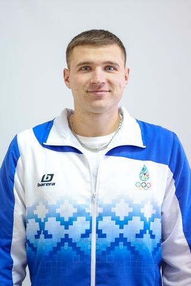

Гребля на каноэ
Денис Николаевич Ващенко (род. 3 января 1998) — жлобинский гребец на каноэ, мастер спорта международного класса Республики Беларусь, чемпион Европы среди юниоров и теперь тренер в родном ЦОРе. Один из самых ярких примеров того, как спортсмен из Жлобина дошёл до национальной сборной — а затем вернулся растить новое поколение.
Денис начал заниматься греблей на байдарках и каноэ в Жлобине, где ещё в 2012 году открыли современную гребную базу. Позже спортивное образование он получил в Мозыре — в 2019 году окончил Мозырский государственный педагогический университет им. И.П. Шамякина, а до этого тренировался в мозырском филиале Гомельского государственного училища олимпийского резерва, через которое прошли и олимпийские звёзды белорусской гребли — Ольга Худенко, Надежда Попок, Маргарита Махнева. Специализация — гребля на каноэ, в том числе в двойке (C2) на дистанции 1000 метров.
На взрослом уровне в его копилке серебро Европейских игр 2015 года в Баку в его дисциплине. Главные результаты пришлись на юниорскую пору:
За этот рывок в 2016 году Денис стал стипендиатом Президентского спортивного клуба — это поддержка лучших молодых спортсменов страны. А в 2015-м, ещё до юниорского триумфа, ему уже присвоили звание мастера спорта международного класса.
Спортивную карьеру Денис завершил рано — и остался в гребле уже как наставник. Сегодня он тренер-преподаватель отделения гребли на байдарках и каноэ Центра олимпийского резерва г. Жлобина, вторая квалификационная категория. Работает в паре с Натальей Борисовной Макаренко. Любопытно, что на базе жлобинского ЦОРа не раз проходили учебно-тренировочные сборы и тестирования национальной сборной Беларуси по гребле на каноэ — так что его воспитанники видят работу «главной» команды буквально в лицо.
Важное уточнение: Денис — специалист именно гребли на каноэ (байдарочно-каноэ направления), а не академической гребли. Так что роль Ващенко в местном спорте — связующее звено: он единственный в городе тренер с международными регалиями в гребле, и его опыт «изнутри сборной» для жлобинских ребят особенно ценен. Сейчас ему 28 лет.